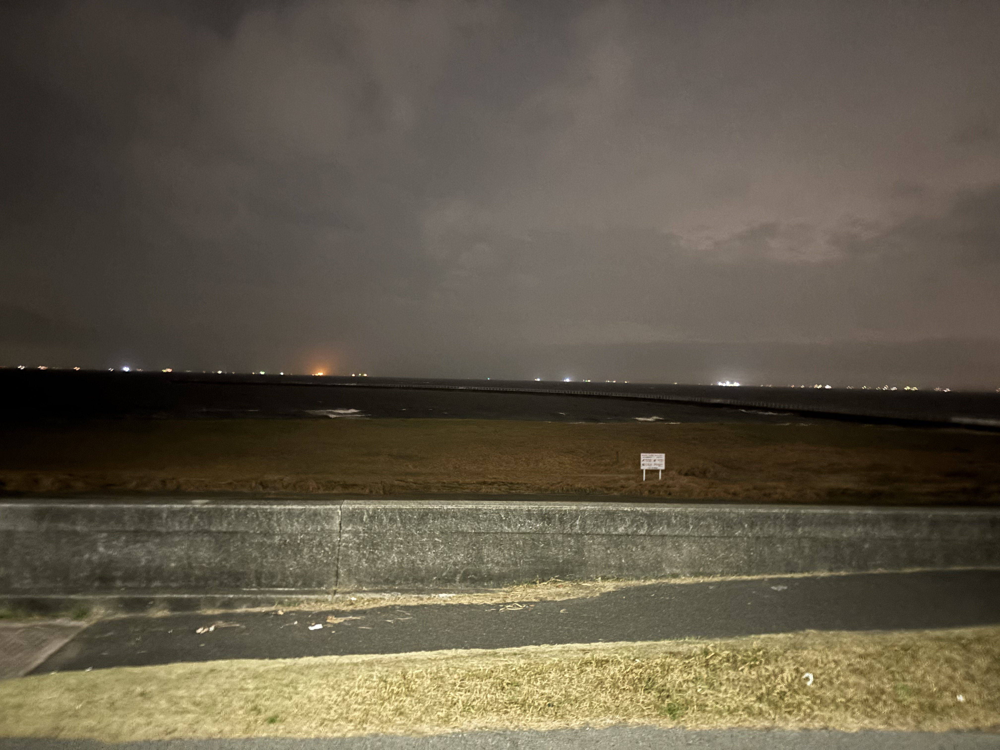
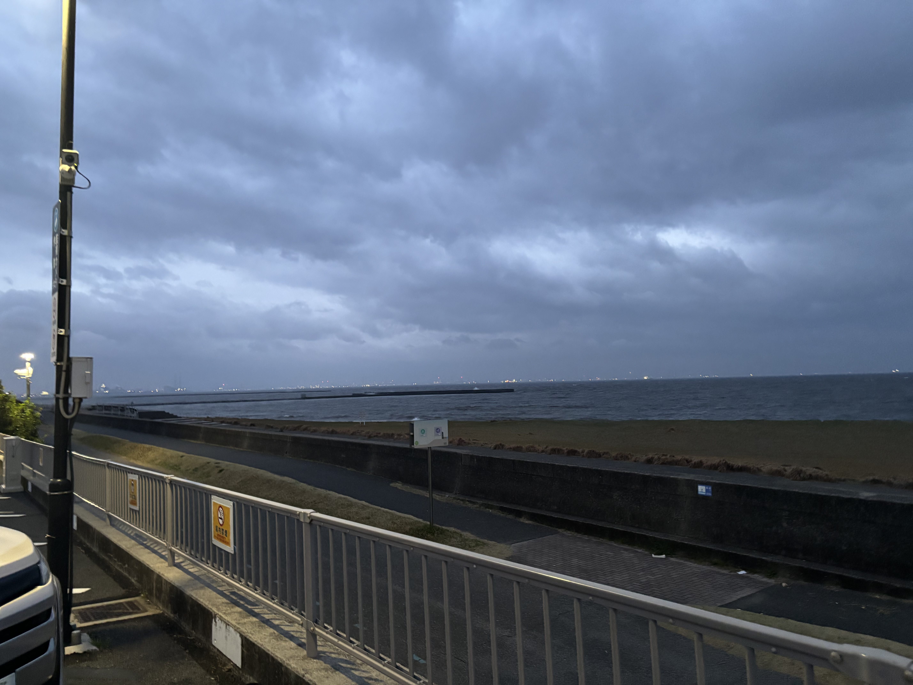

東京湾
Top先日、友人数人と共に真夜中に東京湾に行くという凶行を行った。理由はない。つけるとするなら、近くに行ける距離にいたから、というのがもっともだ。

着いたのは午前3時ごろ。天気は曇り、まだ薄暗く、周りには人一人いない。着いたところは水泳禁止。そもそも水着を持っていなかったため、泳げなかった。とりあえず来たはいいものの、特にやることもなかったため、写真を撮るなり駄弁るなりして時間をつぶした。

気がついたら午前5時。明るくなってきたが、いまだ天気は曇り。さすがに飽きが来たため、少し写真を撮って解散。特に何もしてないが、非常に楽しかった。